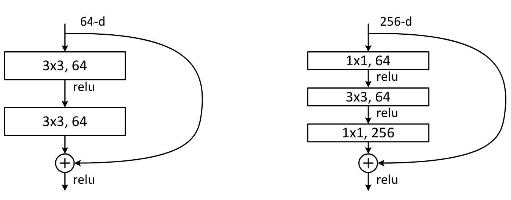

Connexions résiduelles#
Les connexions résiduelles, aussi appelées skip connections, ont été introduites dans l’article Deep Residual Learning for Image Recognition. Cette technique a permis l’utilisation de réseaux profonds, ce qui n’était pas vraiment possible auparavant.
Depuis, les connexions résiduelles sont partout :

Dans ce cours, nous allons voir pourquoi ces connexions résiduelles sont si importantes et comprendre leur intérêt de manière intuitive. Ce notebook s’inspire du cours de fastai.
Intuition#
L’article sur les connexions résiduelles part d’un constat : Même en utilisant la batchnorm, un réseau profond avec un nombre supérieur de couches est moins performant qu’un réseau moins profond (en supposant les autres paramètres identiques et pour un réseau déjà relativement profond, par exemple 20 couches). Ce phénomène se produit aussi bien sur les données d’entraînement que de validation, donc il ne s’agit pas d’un problème d’overfitting.

Figure extraite de l’article original.
De manière intuitive, cela semble assez aberrant. Imaginons que l’on remplace nos 36 couches supplémentaires par des fonctions identité (qui ne transforment pas l’entrée). Dans ce cas, le réseau de 56 couches devrait être aussi performant que celui de 20 couches. Pourtant, en pratique, ce n’est pas le cas, et l’optimisation n’arrive même pas à transformer ces 36 couches en identité.
Une manière de comprendre les connexions résiduelles est de considérer qu’elles ajoutent directement l’identité à la transformation. Au lieu du classique x=layer(x), on utilise x=x+layer(x). En pratique, l’ajout de ces skip connections permet une bien meilleure optimisation.
Une autre façon de voir les choses, qui explique le terme “résiduel”, est de considérer la transformation comme étant y=x+layer(x), ce qui équivaut à y-x=layer(x). Le modèle n’a plus pour objectif de prédire \(y\), mais plutôt de minimiser la différence entre la sortie voulue et l’entrée. C’est de là que vient le terme “résiduel”, qui signifie “le reste de la soustraction”.
Le universal approximation theorem stipule qu’un réseau de neurones suffisamment large peut apprendre n’importe quelle fonction. Cependant, il existe un énorme écart entre ce qu’il est possible de faire théoriquement et ce que l’on arrive à faire en pratique. Une grande partie de la recherche en deep learning vise à réduire cet écart, et les connexions résiduelles représentent une avancée majeure dans cette direction.
Le bloc Resnet#
Pour entrer un peu plus dans les détails, prenons l’exemple du bloc resnet, qui est la première version des connexions résiduelles et qui s’applique aux réseaux de neurones convolutifs. Au lieu d’avoir x=x+conv(x) à chaque étape, on a x=x+conv2(conv1(x)), ce qui correspond à cette figure :

Avec les réseaux convolutifs, on souhaite diminuer la résolution et augmenter le nombre de filtres avec la profondeur du réseau. Les connexions résiduelles ne permettent pas cela, car on ne peut pas sommer des tenseurs de tailles différentes. En pratique, on peut modifier le tenseur provenant de la connexion résiduelle :
Pour diminuer la résolution, il suffit d’appliquer une opération de pooling (Max ou Average).
Pour augmenter le nombre de filtres, on utilise une convolution avec des filtres de taille \(1 \times 1\), ce qui correspond à un simple produit scalaire.
Convolution \(1 \times 1\) : Par rapport à une convolution classique, la convolution \(1 \times 1\) simplifie la transformation des canaux de l’image sans mélanger les informations spatiales. Elle fonctionne principalement comme une opération de réduction de dimensionnalité ou de réajustement des canaux.
Voici comment on pourrait implémenter le bloc de resnet en PyTorch :
import torch.nn as nn
import torch.nn.functional as F
class ResBlock(nn.Module):
def __init__(self, ni, nf, stride=1):
self.convs = nn.Sequential(
nn.Conv2d(ni, nf, kernel_size=3, stride=1, padding=1),
nn.ReLU(),
nn.Conv2d(nf, nf, kernel_size=3, stride=1, padding=1)
)
# Si le nombre de filtre de l'entrée et de la sortie ne sont pas les mêmes
self.idconv = nn.Identity() if ni==nf else nn.Conv2d(ni, nf, kernel_size=1, stride=1)
# Si le stride est différent de 1, on utilise une couche de pooling (average)
self.pool =nn.Identity() if stride==1 else nn.AvgPool2d(2, ceil_mode=True)
def forward(self, x):
return F.relu(self.convs(x) + self.idconv(self.pool(x)))
Note : On utilise la fonction d’activation après l’ajout de la partie résiduelle, car on considère le bloc Resnet comme une couche à part entière.
L’exemple des connexions résiduelles illustre l’importance pour les chercheurs de pratiquer et d’expérimenter avec les réseaux de neurones, plutôt que de se limiter à la théorie.
En pratique, il a été démontré dans l’article Visualizing the Loss Landscape of Neural Nets que les connexions résiduelles ont pour effet de lisser la fonction de loss, ce qui explique que l’optimisation se passe beaucoup mieux.

Point sur le bloc bottleneck#
Un autre type de bloc a été introduit dans l’article Deep Residual Learning for Image Recognition. Il s’agit du bloc bottleneck, qui ressemble à ceci :

À gauche, le bloc resnet de base et à droite, le bloc bottleneck.
Ce bloc contient plus de convolutions, mais est en fait plus rapide que le bloc resnet de base, grâce aux convolutions \(1 \times 1\) qui sont très rapides. Le gros avantage de ce bloc est qu’il permet d’augmenter le nombre de filtres sans augmenter le temps de traitement (et même en le réduisant). C’est ce bloc qui est utilisé pour les versions les plus profondes de resnet (50, 101 et 152 couches), tandis que le bloc de base est utilisé pour les versions moins profondes (18 et 34 couches).
Note : En pratique, si l’on utilise les couches bottleneck sur les architectures moins profondes (18 et 34 couches), on obtient généralement de meilleurs résultats qu’avec les blocs resnet classiques. Pourtant, dans la littérature, la plupart des gens continuent d’utiliser la version avec le bloc resnet. Parfois, les habitudes restent ancrées, mais cela montre l’importance de se questionner sur les “choses que tout le monde sait”.
Pour conclure, les couches résiduelles sont une avancée majeure dans le deep learning. Il est conseillé de les utiliser dès que votre réseau commence à devenir profond.